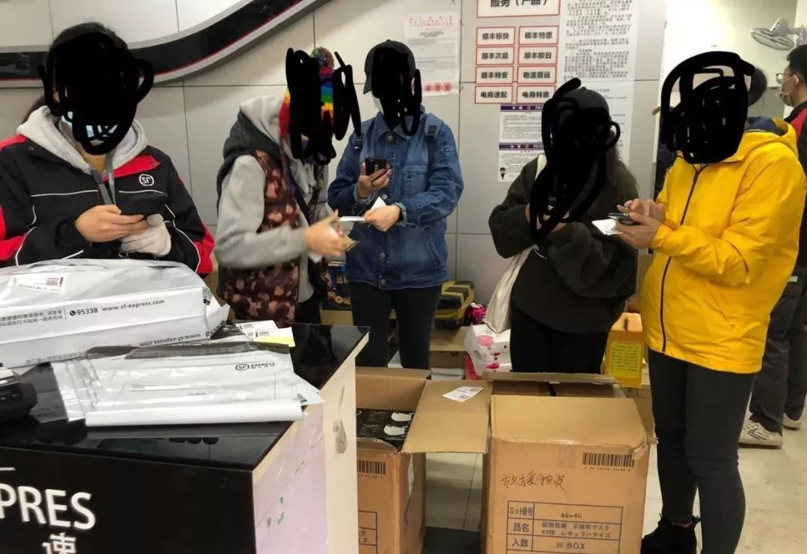

网友买口罩买到了武汉寄出的“救援物资”？武汉开发区官方回应来了
原文链接 备份链接 图片来源：图虫 记者：杨霞 柯晓斌 郑萃颖 “ 经武汉开发区（汉南区）公安分局调查核实，这批口罩是武汉华世达防护用品有限公司，与武汉市总工会汉南工人文化宫无关。 ” 2月14日，有网友在微博发帖称，他们在网上团购了一批 …

国家已出台相应政策
鼓励企业增产紧缺物资
几经周折，终于拿到了通过微商“团购”的那几盒口罩之后，广西南宁的连钰（化名）反而睡不着觉了。她忍不住疑惑，“河南厂家”生产的口罩，为何从武汉发货？为何口罩外包装的箱子上，会写着“救援物资”？
2月14日，连钰委托一起通过微商“团购”口罩的朋友，在微博上提出了这些问题之后，引起了关注。舆论直指或有人倒卖救援物资。次日，武汉经济技术开发区新闻中心官方微博“认领”了这一事件的解释权，发声明称，经过武汉开发区（汉南区）公安分局调查核实，这批口罩为武汉某防护用品公司生产，并非社会捐助的救援物资。
对于为何在包装写上“救援物资”，并且能够毫无障碍地通过物流管制，将货物运出武汉，该官微声明并未作具体解释。
武汉来的“救援物资”
2月2日，包括连钰在内的几十位南宁市民一起“团购”的一次性口罩，终于进入物流流程了。疫情暴发后，跟全国各地一样，南宁医疗防护用品紧俏，许多市民面临“一罩难求”的困境。
连钰所在的一个团购群里，有人联系到了一位自称能够代购口罩的王姓微商。团购群的朋友一共向王某购买了100盒口罩，每盒有40个。
这4000个口罩一共12800元，还包邮。平均一个口罩3.2元，大家都觉得，价格还能接受。
快递大多停运，不时有人在团购群催问，口罩到哪儿了？而大家的疑惑，也正是从看到物流信息之后开始的。2月3日，物流显示“快件在武汉汉南区汉南营业点已装车”。也就是说，这批口罩是从武汉发货的。
对此，微商的解释是，“口罩总厂基本都是湖北”。
作为此次疫情最大重灾区，此前武汉各医院多次传出医疗防护物资告急甚至告罄，民间的口罩缺口也存在多日，每天都有外省市捐赠的口罩运往武汉。并且当时，口罩已经作为“战时物资”，在湖北省内被统一调配，多数口罩生产厂家被政府部门征用，以便第一时间将医用口罩送往一线医护人员手中。
这样的情况下，为何还有口罩能从武汉发出，并且发往疫情轻微的外省市？口罩发货前，那位王姓微商曾清清楚楚告诉购买者，这批口罩是河南工厂出口日本的产品。而本应河南发货的口罩，却在武汉出发，厂家也变成了武汉本地厂家。
一周后，这批从武汉发货的口罩到达南宁。还没等快递员配送，公安部门先联系上了买家。理由很简单，疫区过来的口罩，出于安全起见，需要查问清楚。
几位买家在警方工作人员陪同下前去验货，这时，他们第一次看到装着口罩的外包装箱子上，用黑色水笔写着“救援物资”四个字。这四个字彻底激发了买家们的不安。

买家查看包裹情况，发现箱子上写有“救援物资”四个字。图片来源：受访者提供
大家让负责采买的小叶继续联系微商，问清口罩来源。同时，有人通过快递公司了解到，自从武汉封城以后，的确有物流管制。个人从武汉发往外地的快递，原则上是三公斤及以内。
“这批口罩有两千个共计两箱，发货单显示重量是22公斤，为什么这批口罩可以在这个时期发出来?”这是多数买家最疑惑的问题。
“都是靠关系拿的货”
口罩暂时被南宁警方扣押的时候，小叶负责跟微商以及口罩厂家联络，随后在团购群内公示。这批口罩的生产厂家——武汉华世达防护用品有限公司的联络人何雄告诉她：这批货没有问题，公安这里已经出示了证明。不过，小叶至今不清楚这句话的含义。
2月11日，这批武汉口罩的质检有了结果，产品合格，质检部门将这批口罩还给团购的买家们。
领回口罩之后，大家疑虑未消。连钰和朋友在微博上发文质疑之后，网友敏感地怀疑到，会不会是有人将外地捐赠的救援物资拿来倒卖了？
网络上的舆论惊动了口罩生产厂家。2月15日，何雄给小叶来电，表示“现在网上沸沸扬扬，我们很被动”，并称自己这两天多次被电话骚扰。
小叶对于微博的事并不知情，她对何雄说，如果你被骚扰了，可以报警。“报案有什么用呢？我们武汉是重灾区，现在我们把口罩寄到别的地方去，本来就是众矢之的。”何雄对她说。
“网友揪着救援物资几个字不放，那几个字肯定是别人写上去的，有人想通过这个来害我们厂。”何雄否认口罩外包装箱子上“救援物资”四个字是自己或者厂方所写。
但负责收寄这批口罩的快递员与何雄有着不同说法。一周前，这批口罩还在武汉市汉南区。负责那一片区的快递小哥回忆道，那天，写着“救援物资”的大箱子大概有七八十箱。“一起寄的，字是他们自己写的。”该快递员说。
王姓微商则表示，就在这批口罩运出武汉的次日，该厂的口罩就“完全发不出来了”，因为“政府的人在那边监管，一出货就运往灾区”。
此外，该微商还透露，现在他们拿口罩，已经是“一手过一手”，“我不知道我是第几手了，我只知道这是朋友那边出来的货，他也是找的别人拿的。直接找厂家，根本不会给你货。人家都是靠关系拿的货，出来再高价卖。”
中国人民大学商法研究所所长刘俊海认为，从重灾区大量卖口罩到外省市无论如何是说不过去的，这违反疫情防控时期，物资集中调配、优先供应重灾区和一线的原则。“此前大理截胡重庆口罩时为什么让人愤怒，也是因为违反这个原则。”
另一方面，他建议武汉乃至湖北尽快摸清口罩的真实供需状况，“究竟整个武汉、湖北需要多少口罩？本地自己能够生产多少口罩？国内外人士捐了多少口罩？如果本地产能足够，那么外地是不是可以不用捐了？”
厂家生产之困
2月15日，舆论发酵的第二天，武汉经济技术开发区新闻中心官方微博发声明称：“经查，何雄在网上出售的口罩来源于武汉华世达防护用品有限公司，该公司生产出口口罩等防护用品……网友质疑的口罩是武汉华世达防护用品有限公司生产，不是社会捐助的救援物资，该公司已向区公安分局出具了关于何雄于2月1日从该公司提取口罩的情况说明。”
但是这样的声明被网友认为是避重就轻，不仅没有说明为何箱子上写着“救援物资”，也未解释外售口罩的正当性，质疑声随之而来——“目前口罩生产管控严格，需地方委托授权，而在物资奇缺的湖北省内却有工厂可以开工做微商”“全世界都知道武汉缺口罩，武汉还能往外卖口罩”“如果本地产能充足，为什么还要外地志愿者千里迢迢买同样口罩往湖北寄”……
而此次舆论漩涡中心的口罩厂家——武汉华世达防护用品有限公司，此前曾被当做“抗疫”中的先进企业被多家官媒报道。“只要党和政府号召，我们承诺无限期复工生产防护品。”该公司总经理何振华接受新华社、光明日报等多家媒体采访时均表示，考虑到当前武汉急需医疗防护产品，公司及全体员工同意延迟休假，开足马力投入生产，直至疫情缓解。
据此前媒体报道，该公司每天可生产普通医用口罩60万支、N95口罩5000支、高级别防护服2000件。而此前，武汉华世达是一家专门做出口防护产品的企业，在国内尚未取得医疗器械生产许可证。疫情暴发之后，湖北省市场监管局向该公司紧急核发二类医疗器械生产许可证，准许该企业在国内生产医疗防护品。
有行业内知情人士告诉中国新闻周刊，出于疫情发展的医疗需要，许多制造企业在节假日召回员工需要一定成本，“这时候都是亏本在生产，除了生产成本、员工工资支出，很多生产医疗相关用品、配件的企业都是成本价给到一线，即便这样，这个钱也不知道什么能收回，资金压力很大。”该知情人士对某些厂家被征用后、自寻销路的做法表示理解。
这样的说法，在何雄与买家的沟通中得到相互佐证。他曾表示，企业如果全部供应政府，没有一点外销的话，就会每天处于亏本状态。就此，中国新闻周刊向何雄求证，但未收到回复。
此前，已有多家媒体报道过口罩口罩、隔离服等生产企业亏本生产，甚至“生产一个亏一个”。由此，国家也出台了相应的补贴政策。为鼓励企业增产增供应对疫情紧缺物资，2月9日，中国国家发展和改革委员会、财政部以及工业和信息化部通知，疫情防控期间，N95口罩等十类医疗防护产品将由政府兜底采购收储，国家相关部门应帮助企业解决资金、资质、生产场地、设备购置和原材料采购等实际困难。
至截稿前，武汉华世达防护用品有限公司未对外售口罩的原因作出回应。但此次事件值得思考之处，或许不仅是那4000个口罩的出处和去处。“希望通过这个事情，一是督促有关部门能够做好统筹，二是真正满足公众的知情权。”刘俊海说。
值班编辑：石若萧
推荐阅读
▼
新冠病毒，人类对它的了解只是冰山一角
知名研究机构报告：新冠疫情对全球经济影响集中在上半年

*在家没事赚现金*
*点击“阅读原**文”了解更多详情 *
原文链接 备份链接 图片来源：图虫 记者：杨霞 柯晓斌 郑萃颖 “ 经武汉开发区（汉南区）公安分局调查核实，这批口罩是武汉华世达防护用品有限公司，与武汉市总工会汉南工人文化宫无关。 ” 2月14日，有网友在微博发帖称，他们在网上团购了一批 …
原文链接 备份链接 新冠肺炎疫情的医疗物资告急，各地纷纷发出求助信息。与此同时，海外华人行动起来在异国采购紧缺物资，却苦于没有渠道运抵国内抗疫一线。一条绿色通道出现，为救援物资架起跨洋的生命运输线。 故事时间：2020年 故事地点：海 …
原文链接 备份链接 参与物资捐赠工作的年轻志愿者，很多也是第一次卷入互联网的风波里。 文 | 吴敏霞 余晓璐 编辑 | 沈小山 疫情当前，海内外学生志愿者也在行动。网络质疑、商家欺骗，打通物资渠道的工作在互联网暴露大量信息。这些参与物资 …
原文链接 备份链接 向风暴眼输送防护物资并非易事武汉市中心医院医生发布微博求助，希望社会各界捐物资。图源：微博截图 2月12日晚，武汉中心医院的一位医生在微博发出求助。 这位身穿防护服的医生对镜头说，医用N95没有了，只能戴工业口罩，医 …
原文链接 备份链接 从武汉离开的时候，他迎面看到有好多卡车正在往自己来的地方去，他没有办法去描述那一瞬间的感动。「我们可能都是一样的……那种感觉好像怎么都说不上来。」大概都是再普通不过的普通人，所以才选择了逆行。 文｜****林燕 编 …